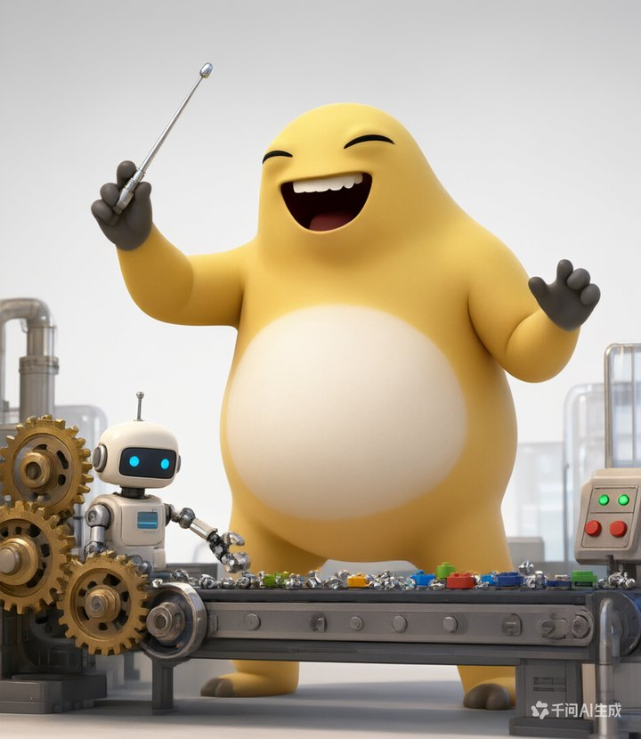
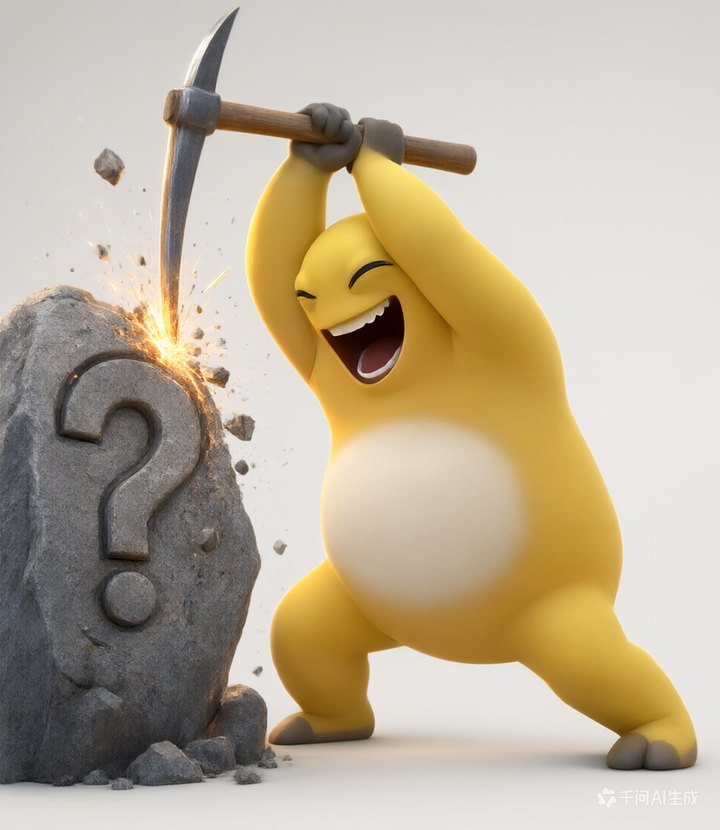
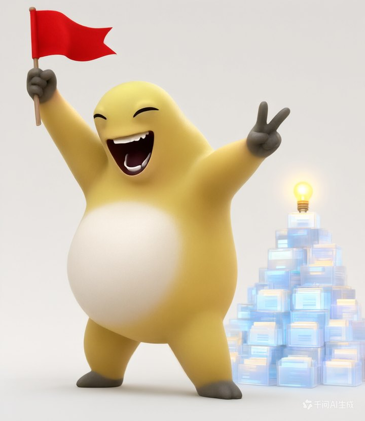
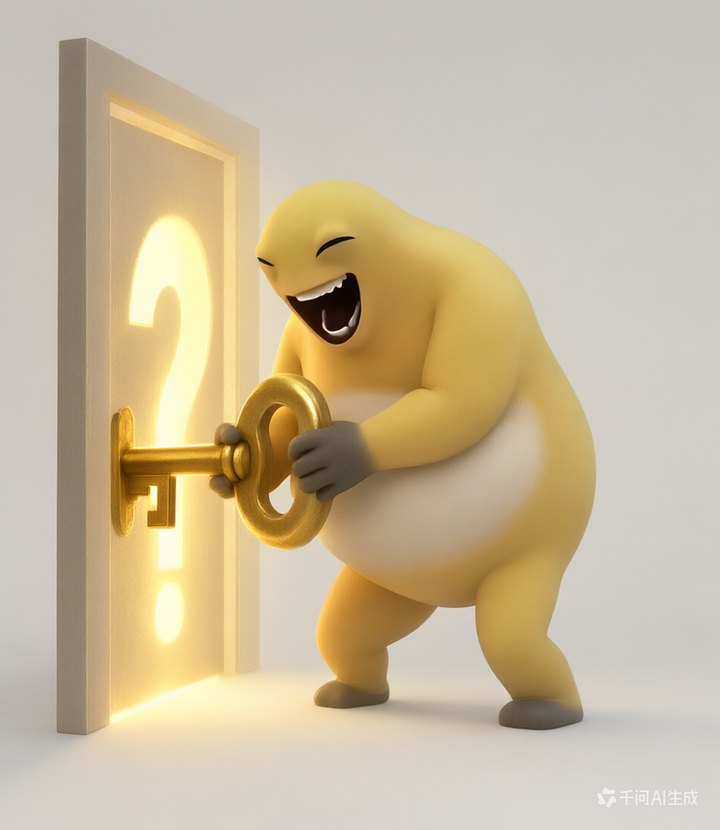

DataClawHub央国企物流 AI 社区
你是哪种AI 程序员？
四道题，看看你跟 AI 一起干活时是哪一路。




16 种协作人格，你是哪一种？
不收集个人信息。结果只在你的手机上生成。
01 / 04选择更接近你的那一个
第 01 题
测 试 完 成
----AI 协作人格
注册并解锁完整画像报告
测试结果由 4 道题的作答方式推导，仅供自我参照。
完整报告需在 DataClawHub 注册后查看。